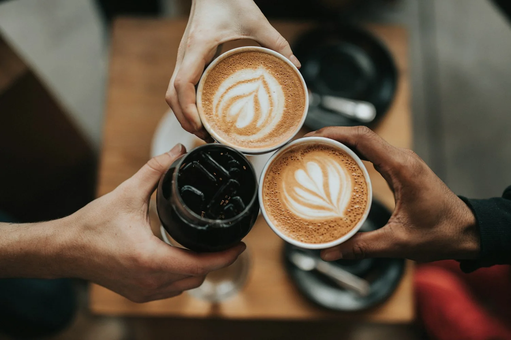

にっこりキュート熊本・長嶺南CAFE & EVERYDAY
ABOUT THE PLACE
長嶺南で、 カフェのひととき。
熊本市東区長嶺南のカフェ「にっこりキュート」。取材記事では、コーヒーとサンドイッチ、くまさんドリンクが紹介されています。
公開情報に基づく紹介です。紹介の出典

A LITTLE DISCOVERY
気になる、カフェのメニュー。
公開記事で紹介されている内容から、お店を知る小さな手がかりを。
コーヒー
取材記事で紹介されている、お店の一杯。
サンドイッチ
記事に掲載された食事メニューです。
くまさんドリンク
取材記事に登場するドリンク。現在の提供内容はお店にご確認ください。
掲載内容は出典の掲載時点の情報です。現在の提供内容・価格・営業状況を保証するものではありません。
TAKE A MOMENT
日々の途中に、 ひと息の時間を。
ご来店前には、最新の案内をご確認ください。
- 所在地
- 熊本県熊本市東区長嶺南4-10-50 木村ビル 1F
- 営業時間
- 最新の営業日・営業時間は、お店の案内をご確認ください。
地図は店名・住所の検索リンクです。正確な入口や臨時休業などは、訪問前にご確認ください。